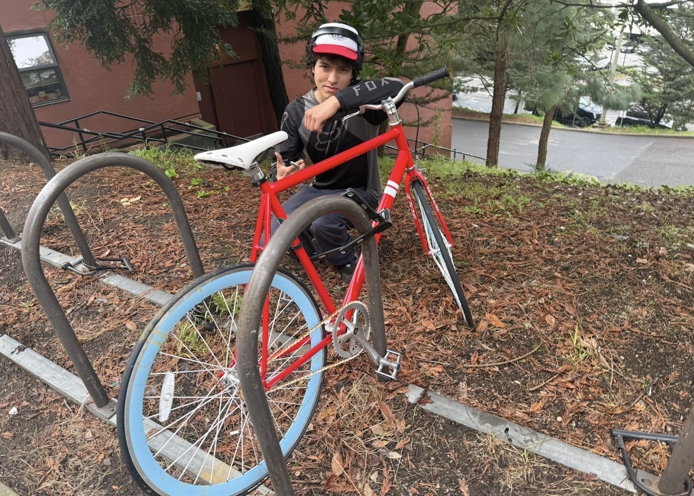
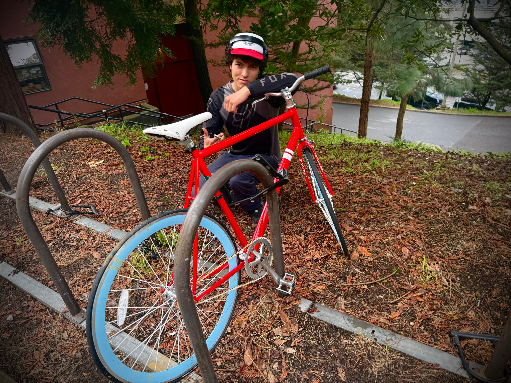

The photo I chose for this assignment is of my friend Ruben standing next to a bike outside the Towers dorms at SFSU. The bike has become well known among my friend group because it has been sitting in the same spot for almost the entire school year. What makes it stand out even more is that it is a bright red bike with a very specific look. It seems like a rare type of bike for someone to own if they do not ride that often, which makes it even stranger that it has stayed there for so long. Because of this, my friends and I started calling it “The Immovable Bike.” Over time, it became less like a random bike rack object and more like a small landmark that we all recognize when walking around campus.
I chose this subject because it represents a small inside joke that has become part of my experience living around the Towers. A lot of people probably walk past the bike without thinking about it, but for my friends, it has developed its own reputation. Having Ruben in the photo adds to that feeling because he is standing next to it like he is presenting something important, even though the subject is just a bike that never moves. I liked that contrast between the seriousness of the pose and the weird humor of the bike itself.
For the editing process, I used the Photos app editor on my iPhone. I wanted to keep the image realistic, so I did not use any major filters or AI tools. The main thing I focused on was making the fog on the left side of the original photo less visible. I also increased the contrast and adjusted the color so the red frame of the bike would stand out more strongly from the darker background, the trees, and the wet ground. The edits made the image feel more dramatic and helped guide the viewer’s eye toward the bike first.
Editing changed the image by making the bike feel more like the main character of the photo. In the original version, the fog and flatter colors made the whole scene look more casual and washed out. In the edited version, the red color is much more noticeable, and the darker edges make the bike and Ruben feel more centered in the frame. I want viewers to notice how strange and memorable the bike feels, even though it is technically just an everyday object. The hardest part was increasing the contrast without making the photo look too fake or overly edited. From this activity, I learned that small photo edits can change the story of an image. By changing the color and contrast, I was able to make the photo better match the reputation that “The Immovable Bike” already has among my friends.

